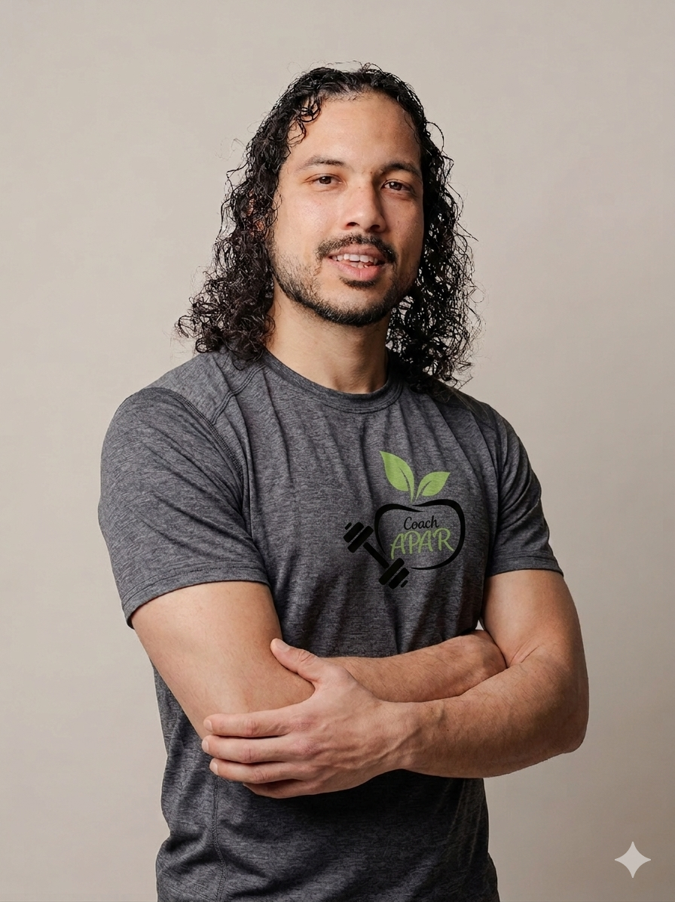

Votre Coach Sportif
Expert à Montpellier
Coaching personnalisé, Activité Physique Adaptée, Nutrition & Pilates.
Coach certifié Master 2 APA à Montpellier — spécialiste pathologies, handicap & réadaptation.

Le Coach qui Fait
la Différence
Je suis Loïc, coach sportif certifié Master 2 en Activité Physique Adaptée (BAC+5) à Montpellier. Ma formation universitaire me permet d'accompagner en toute sécurité des publics à besoins spécifiques là où un coach classique ne peut pas aller.
Un Accompagnement Sur Mesure
Des programmes adaptés à votre profil, vos objectifs et vos contraintes médicales
Activité Physique Adaptée
Mon expertise unique : accompagnement des personnes en situation de handicap, pathologies chroniques, seniors et réadaptation post-opératoire à Montpellier.
- Approche scientifique & sécurisée
- Coordination avec professionnels de santé
- Programmes progressifs personnalisés
- Adaptation aux pathologies
Coaching Sportif Individuel
Programmes personnalisés pour atteindre vos objectifs : perte de poids, prise de masse, performance sportive ou remise en forme à Montpellier.
- Séances 1h personnalisées
- Bilan postural complet
- Suivi WhatsApp inclus
- Ajustements réguliers
Conseils Nutritionnels
Approche holistique sport + nutrition. Plans alimentaires personnalisés adaptés à vos objectifs, vos goûts et vos contraintes de santé.
- Bilan nutritionnel complet
- Plan alimentaire sur mesure
- Recettes adaptées
- Suivi et ajustements
Cours de Pilates
Renforcement musculaire profond, amélioration posturale et soulagement des douleurs dorsales. Cours en petit groupe (max 6 personnes).
- Diplôme Matwork Pilates Niveau 1
- Groupe max 6 personnes
- Tous niveaux acceptés
- Focus réadaptation posturale
Spécialiste Toutes Pathologies
Ma formation Master 2 APA me permet d'accompagner en toute sécurité des publics à besoins spécifiques à Montpellier
Maladies Cardiovasculaires
Hypertension, insuffisance cardiaque, post-infarctus — protocoles sécurisés
Diabète Type 1 & 2
Amélioration de la glycémie et de l'insulino-sensibilité
Troubles Musculo-squelettiques
Arthrose, mal de dos chronique, tendinites, fibromyalgie
Obésité & Surpoids
Approche progressive et bienveillante pour une perte de poids durable
Handicap Moteur
Programmes 100% adaptés aux capacités et objectifs de chacun
Seniors & Prévention Chutes
Maintien de l'autonomie, équilibre et renforcement musculaire
Coach APA'R vs Coach Classique
Une expertise supérieure qui fait toute la différence
4 Étapes vers Votre Transformation
Une méthodologie éprouvée, basée sur 5 ans d'expérience à Montpellier
Bilan Initial Complet
Évaluation de votre condition physique, analyse posturale, tests fonctionnels, discussion sur vos objectifs et contraintes médicales.
- Anamnèse complète
- Tests de capacités
- Définition des objectifs
Programme Sur Mesure
Élaboration d'un plan personnalisé sport + nutrition adapté à votre profil, vos pathologies, vos objectifs et votre rythme de vie.
- Programmation individualisée
- Plan nutritionnel adapté
- Progression sécurisée
Accompagnement Actif
Séances régulières en présentiel avec corrections techniques et suivi WhatsApp illimité entre les séances.
- Séances personnalisées
- Corrections posturales
- Motivation quotidienne
Suivi & Résultats Mesurables
Bilans réguliers pour mesurer vos progrès, optimiser votre programme et garantir l'atteinte de vos objectifs sur le long terme.
- Bilans mensuels
- Ajustements continus
- Résultats mesurables
Leurs Transformations
Plus de 150 clients accompagnés à Montpellier et dans l'Hérault
Réservez Votre Premier Contact Gratuit
Diagnostic offert (valeur 45€) — Premier contact par téléphone ou email
Disponible à partir de 17h30, du lundi au vendredi
Vous préférez nous contacter directement ?
Tarifs & Forfaits
Des formules adaptées à tous les besoins et budgets
Diagnostic Gratuit
Valeur 45€ offerts
- Bilan complet 1h
- Analyse posturale
- Tests fonctionnels
- Plan personnalisé
- Sans engagement
Transformation
20 séances — Économie 150€
- 20 séances coaching
- Bilan nutrition offert
- Plan alimentaire complet
- Suivi WhatsApp illimité
- Garantie résultats
- Validité 3 mois
Premium
Abonnement mensuel
- 4 séances / mois
- Suivi nutrition inclus
- Accès prioritaire
- Support illimité
- Sans engagement
Paiements CB acceptés · Montpellier & alentours (Hérault 34) · Devis personnalisé sur demande
Vos Questions, Nos Réponses
L'APA est une pratique sportive spécialement adaptée aux personnes ayant des besoins spécifiques : handicap, pathologies chroniques, seniors, réadaptation post-opératoire. Contrairement au coaching classique, l'APA nécessite une formation universitaire (Master 2) et permet d'accompagner en toute sécurité des publics fragiles avec une approche scientifique et médicale.
J'ai un Master 2 en Activité Physique Adaptée (BAC+5 universitaire), alors que la plupart des coachs ont un BP/CQP (niveau BAC). Cette formation me permet d'accompagner des publics à besoins spécifiques en toute sécurité, de coordonner avec les professionnels de santé, et d'avoir une approche scientifique basée sur les dernières recherches.
Absolument ! C'est justement ma spécialité. Je suis formé pour accompagner des personnes avec diabète, maladies cardiovasculaires, obésité, arthrose, handicap moteur, et bien d'autres pathologies. Je crée des programmes 100% sécurisés et adaptés à votre condition, en coordination avec votre médecin si nécessaire.
Je suis disponible du lundi au vendredi à partir de 17h30. Le premier contact se fait par téléphone au 07 65 77 51 04 ou par email à coachapar@gmail.com. Vous pouvez également utiliser le calendrier de réservation en ligne pour choisir votre créneau.
Les séances se déroulent à Montpellier et alentours (Hérault). Je peux me déplacer à votre domicile, en salle de sport, ou en extérieur selon vos préférences et vos besoins. Le lieu est discuté lors du premier contact pour trouver la solution la plus adaptée.
Transformez Votre Vie
Dès Aujourd'hui
Diagnostic gratuit (45€ offerts) · Sans engagement · Résultats garantis